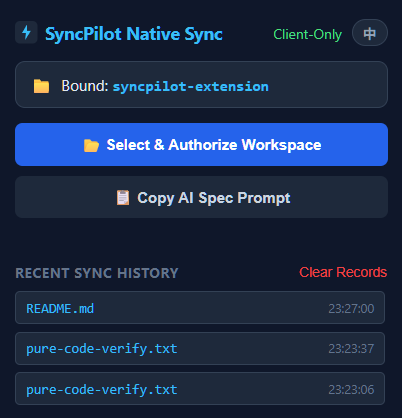
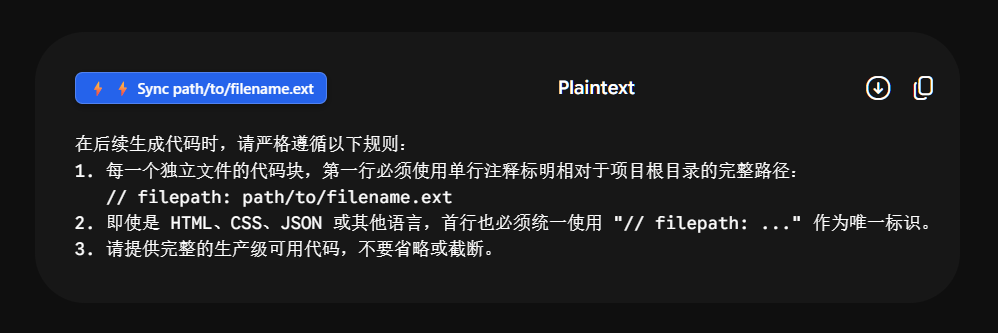

💡 为什么开发 SyncPilot？
在使用 Gemini、ChatGPT、Claude、DeepSeek、Kimi、通义千问、豆包、Grok 等大语言模型做全栈开发时，AI 会在网页中输出许多代码块。传统的流程是：
- 在网页上点击“复制代码”；
- 切换回本地 IDE（VS Code、Cursor 等）；
- 在对应的子目录下新建文件、确认文件名与路径；
- 粘贴代码并格式化。
遇到一次生成 5~10 个组件代码文件的大重构时，手动复制不仅手酸，而且极易遗漏或粘贴错路径。
SyncPilot 采用现代浏览器原生标准的 File System Access API 解决了这个问题：一次性授权本地项目文件夹后，点击 AI 网页上自动注入的“⚡ 直传”按钮，代码瞬间直接写入本地磁盘！
✨ 核心四大亮点
Zero-Daemon（零后台常驻）
无需启动任何本地 Node.js、Python 后台服务或常驻黑窗口，完全由浏览器原生沙箱驱动，绿色纯净零内存占用。
原生注入与单键落盘
自动在 AI 网页的代码块右上角注入原生风格的“⚡ 直传”按钮，递归自动创建各级子目录并写入文件。
本轮对话全量批量同步
屏幕右下角自动检测本轮会话中输出的全部代码文件，支持一键点击“⚡ 本地直存本轮文件”全量同步。
100% 纯净代码无污染
自动精准过滤
// filepath: 路径注释与注入按钮等噪音，写入磁盘的代码与实际项目完全一致。📸 界面与工作流预览

图1：扩展控制面板（支持一键授权工作区、Prompt规范复制及历史同步记录）

图2：代码块右上角注入的“⚡ 直传”原生按钮与右下角批量保存胶囊
🚀 三分钟快速上手指南
-
下载并解压扩展安装包点击上方按钮下载
syncpilot-v2.3.0.zip，下载完成后解压到一个固定的本地文件夹（如D:\tools\syncpilot-extension）。 -
在浏览器中加载扩展打开 Chrome 或 Edge 浏览器，在地址栏输入
chrome://extensions/回车，打开右上角的“开发者模式 (Developer mode)”开关，然后点击左上角的“加载已解压的扩展程序 (Load unpacked)”，选中刚才解压后的文件夹即可完成安装。 -
授权本地工作区点击浏览器右上角扩展栏的 SyncPilot 图标，点击“📂 选择并授权工作区目录”，选择你当前正在开发的项目根文件夹，在系统安全弹窗中点击“允许”。
-
告诉 AI 输出规范 (Prompt)在与 AI 对话前，先将下方提示词发给 AI（或加入 Custom Instructions / System Prompt）：在后续生成代码时，请严格遵循以下规则：
1. 每一个独立文件的代码块，第一行必须使用单行注释标明相对于项目根目录的完整路径：
// filepath: path/to/filename.ext
2. 即使是 HTML、CSS、JSON 或其他语言，首行也必须统一使用 "// filepath: ..." 作为唯一标识。
3. 请提供完整的生产级可用代码，不要省略或截断。 -
即刻享受极速直传AI 输出完毕后，直接点击代码右上角的 “⚡ 直传” 按钮，文件就会瞬间落盘到你的本地项目相应路径！
🔒 安全与隐私声明
SyncPilot 基于 Chrome 官方标准的 File System Access API 实现。所有文件读写均在本地浏览器与你的物理硬盘之间进行，绝不向任何第三方服务器上传任何代码、路径或隐私数据，可完全离线运行。